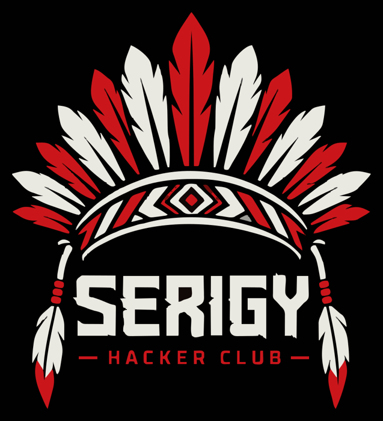

Serigy Hacker Club
Comunidade hacker de cibersegurança em Sergipe. Criada para ampliar e fortalecer a cultura hacker sergipana.
O que é o Serigy Hacker Club?
Nascemos das raízes do AFK, Raul Hacker Club e do AxéSec. Viemos para ser uma instância autônoma delas em Sergipe.
Nosso objetivo é fortalecer a cena regional, ampliando a massa crítica de hackers e profissionais da área. Acreditamos na colaboração, na curiosidade técnica e no impacto do conhecimento compartilhado. Nossas principais frentes de atuação incluem:
- Produção e Pesquisa: Catalisar o desenvolvimento de palestras, artigos, zines, ferramentas, frameworks e pesquisas acadêmicas;
- Aprendizado Contínuo: Fomentar grupos de estudo internos e facilitar a autocapacitação da comunidade;
- Cultura CTF: Impulsionar a criação de times e a realização de competições de Capture The Flag em Sergipe;
- Filosofia Open Source: Defender e disseminar a cultura do conhecimento livre e do código aberto.
Além disso, promovemos encontros presenciais, fomentando a troca de conhecimento.
Links
- Formulário para entrar no Telegram: Form
- Instagram: @serigyhackerclub
- GitHub: SerigyHackerClub